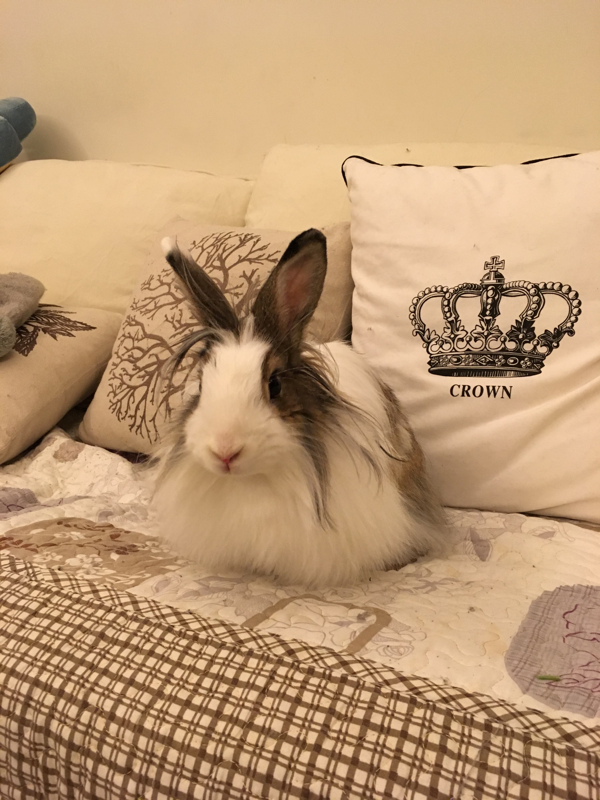
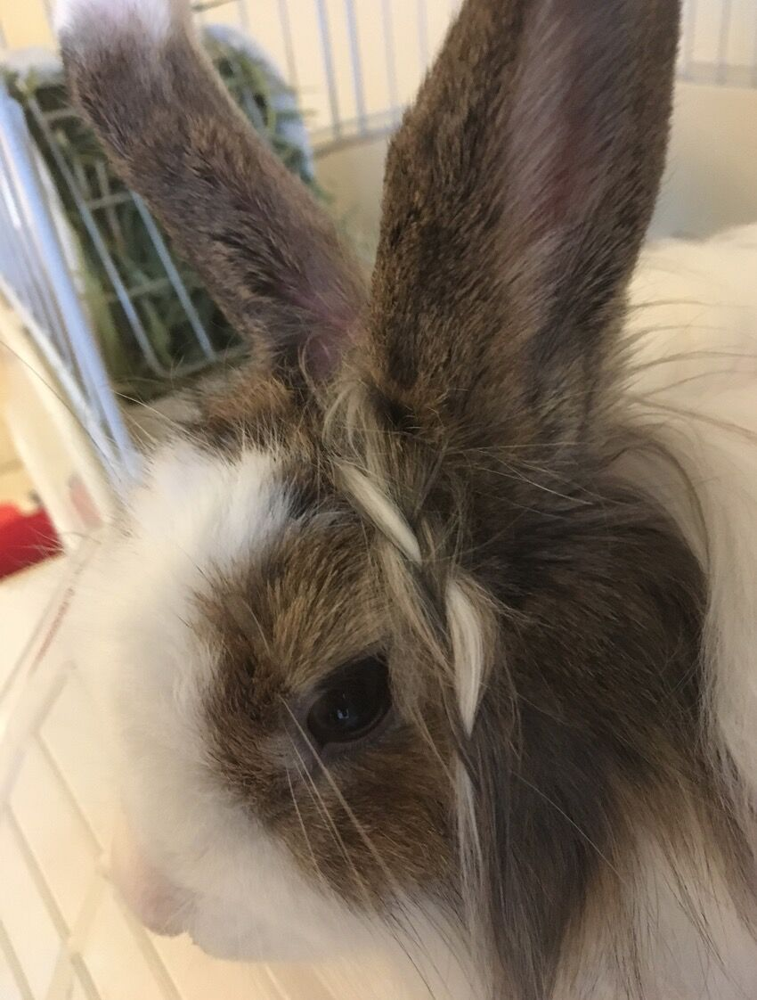
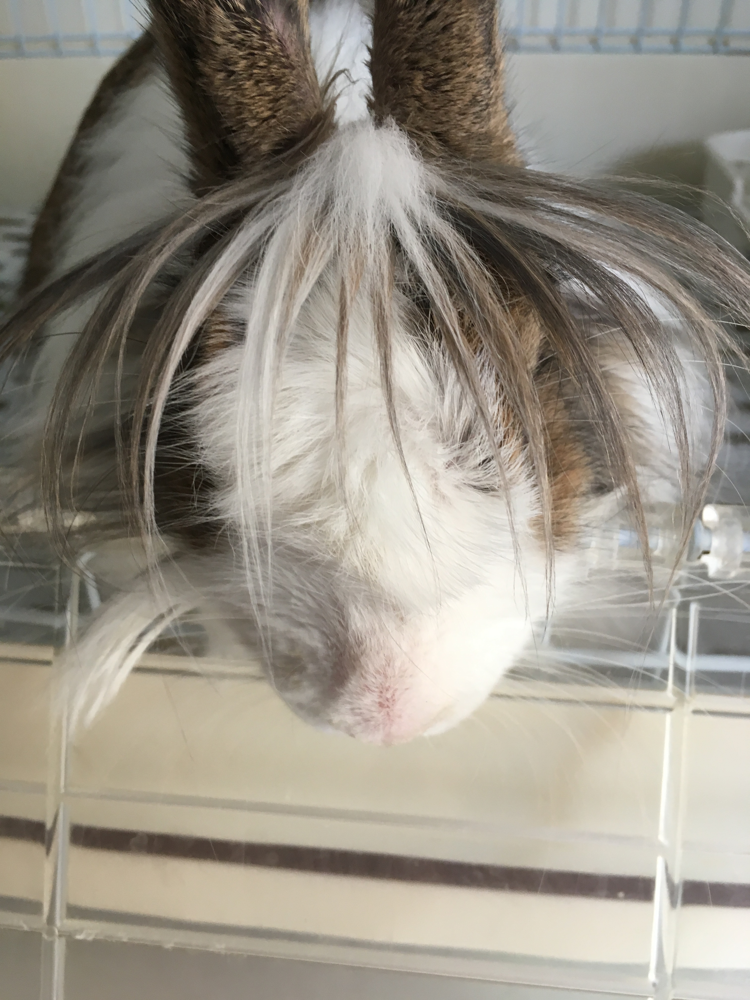
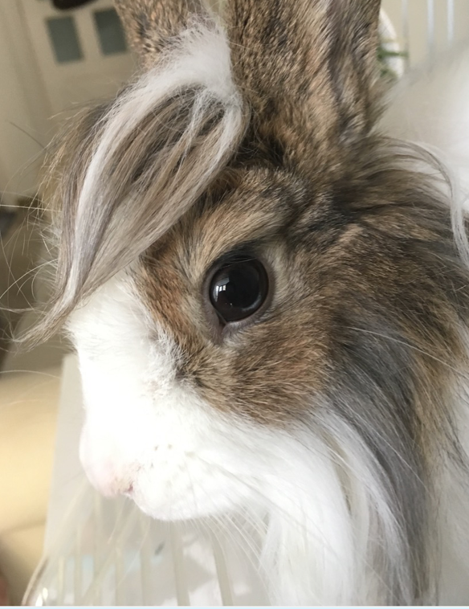
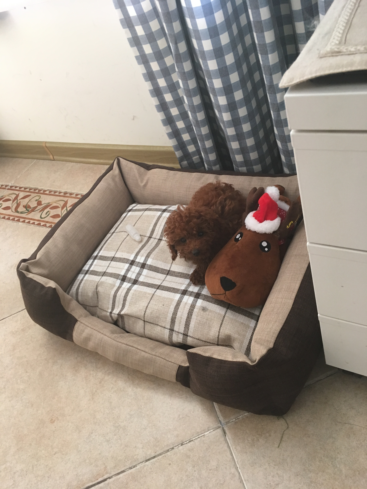
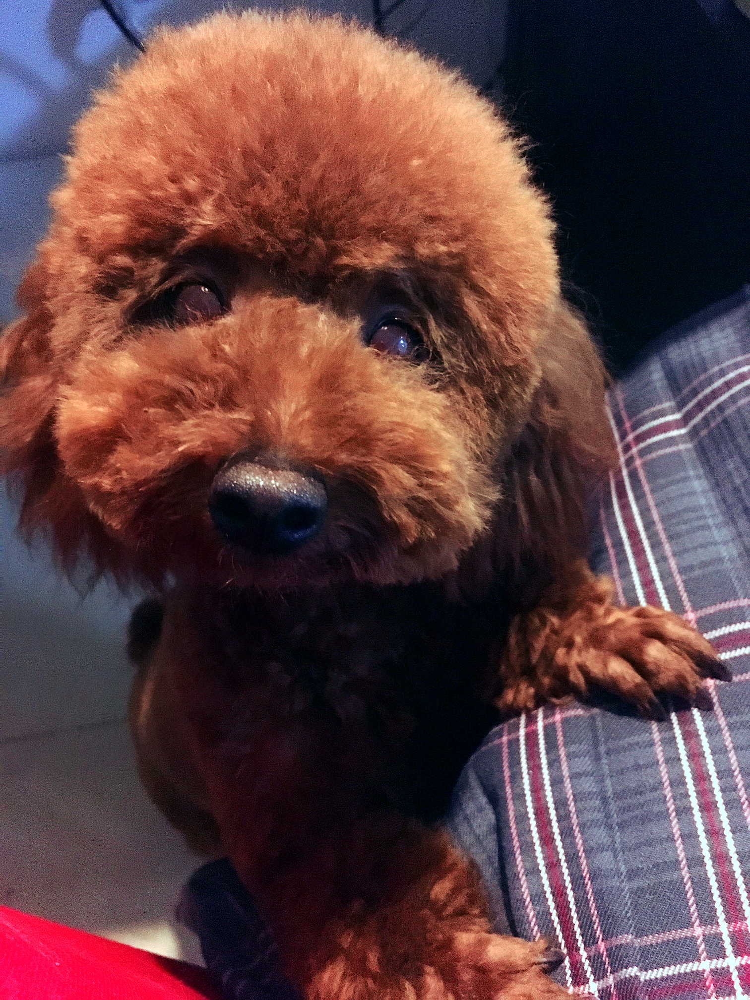

本来想养荷兰猪，事先把功课都做好了，做了万全的准备，去花鸟市场却没有找到心仪的荷兰猪，失望的转着转着……咦！
当时它静静的蹲在笼里，瞪着水汪汪的大眼睛，气质非常独特！也是毛茸茸圆滚滚的，也是笼养的食草动物，就它了吧！
后来
我没料到它的毛会长那么长！好好的怎么就杀马特了呢！
根据我家 @小夏 的需求添一些她认为帅的图
它是个姑娘
真的是姑娘，空气刘海
本来我不想暴露兔子这么癫狂的一面，都怪 @小夏
------------------------------------------------------------------------------------------
去宠物店玩，一排排的笼子里很多萨摩耶，一张张天使的笑脸，但是我知道它们都会长得很大，精力旺盛，我们没有豪宅……
这时候一个店里玩耍的小女孩走过来说：“那些狗都不能摸，不能抱，但是这个可以。”然后把一小团卷毛塞过来。
软塌塌的一个小东西，没有反抗，小脑袋还往我胸前“吧嗒”一靠！我的心在没有看清它长什么样之前就一下子化成一滩水了！
软，乖，文静兮兮的，没有豪宅也可以养的，袖珍小狗！狗！
到家熟悉了两天后。
现在快一岁了，体型娇小，不拆家，会上厕所，保持了文静寡言的性格，静悄悄的，轻易不会叫一声，网上传言的泰迪的毛病全都没有。除了对所有人都友好得不行、不能看家之外，这个狗可以说是养得非常成功了。
颜值在线。
从来没有做过不雅的事，是很好的有礼貌的一只狗狗，不要因为品种就骂它。